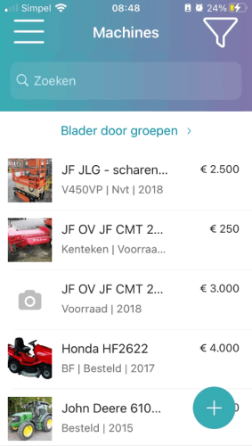

Ga naar het menu  of terug <.
of terug <.
Kies voor de knop Machines.
-
Het scherm Machines verschijnt.
Geef bij Zoeken een zoekterm in.

-
De machines die voldoen aan de zoekterm worden weergegeven tijdens het intypen.
De volgende tabbladen zijn aanwezig:
-
Algemeen
-
Afbeeldingen
-
Standaard
-
Website
-
Zie ook Machine foto's toevoegen
-
-
Transacties
-
De historie van de machine wordt weergeven. Druk op de order om de details te bekijken.
-
Voor meer info Machine transacties
-